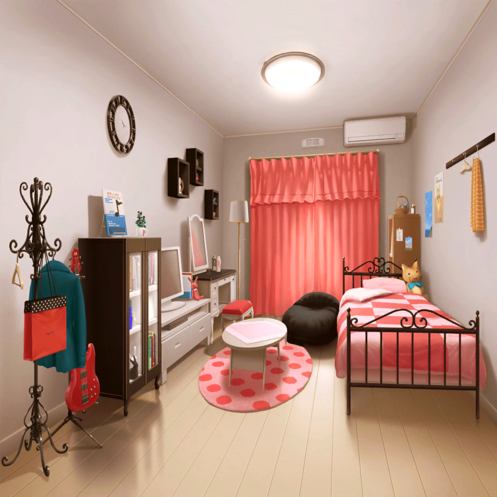

今井家 リサの部屋
リサ
さーてと、それじゃあ早速作詞をしてみよっかな！
リサ
まずは、紙とペンを用意してぇ……
作詞、開始～☆
リサ
………………
………………
………………
リサ
……え？
作詞って……何から手を付ければいいのかな？
え、えっとー……
リサ
……あ、あれ？
書きたいことはたくさんある気がするんだけど……
リサ
……あ、そっか。
こんな時こそ、携帯で調べてみたらいいんだ
リサ
えーとぉ……とりあえず……
『作詞』『やり方』っと……これで検索してみたら……
リサ
わぁ～、すっごい出てきた。
なるほど、色んな方法があるんだな～。
……ん？ これは？
リサ
『新たな才能を発見！ 作詞コンテスト』
リサ
へぇぇ～、作詞のコンテストなんてあるんだ！
リサ
……どうせだったら、これに応募してみよっかな？
リサ
うん！
やっぱりどうせやるなら、これくらい目指さないとね！

翌日
コンビニ
モカ
リサさーん。おつかれさまですー。
どうですか～、作詞っちゃってます～？
リサ
それがさ、聞いてよモカ。
実はさ、できちゃったんだよね～♪
モカ
えぇ～？
もう１曲できちゃったんですか～？
ちょっと、早すぎませ～ん？
リサ
違うよ～、目標ができちゃったの！
モカ
……はぁ～、なんだ目標ですか～？
あたしは１曲作り終わっちゃったのかと思って、
ビックリしちゃいましたよ～
モカ
で、その目標っていうのは～？
リサ
作詞コンテストでの入賞！
これを目標にして、作詞を頑張ろうと思うんだっ♪
モカ
それいいと思いますよ～。
つぐがよく『何事もチャレンジだよ！』って
言ってるんですよねー。まさにそれですね
リサ
そうそう！
まさにそれ♪
モカ
……で、作詞自体はどれくらい進んだんですか？
リサ
ううん、それはまだ
モカ
……え？
まだって……まだ１行も？
リサ
それがやってみたらすっごい難しくってさ～。
昨日は、ペンを持ったままずっと固まってたよ
リサ
何ていうか、書きたいイメージはたくさんあるんだけど、
それが言葉にならないっていうか？
なんて言っていいかわからない感じなんだよね～
リサ
モカ～、なんかいいアドバイスちょうだいよ～
モカ
モカちゃんも作詞は苦手なんで～。
だから蘭に任せてるんですよ～。
あたしはな～んにも、お役に立てませ～ん
モカ
やっぱりこういうのは、
日頃から作詞をやってる人に聞いた方がいいと思いますよ～。
湊さんに相談してみたらいいんじゃないですか～？
リサ
ううん、それはナシ！
できれば、友希那を頼らずにやりたいんだよね
リサ
だって友希那に頼って作詞したら、
友希那が作ってるのとあんまり変わらないもん
リサ
それにさ、完成するまで黙ってた方が、
みんな、ビックリするでしょ☆
モカ
なるほど～、そうなると答えは１つですね～
モカ
湊さんに聞けないなら、
蘭に聞けばいいって、モカちゃんは思いま～す
リサ
蘭に……？
モカ
蘭だけじゃなくて～、
他のバンドでも作詞してる人、ケッコーいるし～
みんなに聞いてみたらどうですか～？
リサ
あ、そっか！
それがあったじゃん♪
リサ
さっすがモカ～！
チョーナイスアイディアだよ～☆
モカ
でしょ～？
モカちゃんってば、やっぱり天才なんですよ～
リサ
それじゃあさ、悪いけど蘭にお願いしてみてくれるかな？
モカ
了解でーす。
今日のバイト終わりで、大丈夫ですか？
リサ
うん、できれば早いほうが嬉しいな。
話を聞いて、自分で作詞しないといけないからさ☆
モカ
はーい。それじゃあ連絡しておきまーす
リサ
よかったぁ～！
ホントありがとね、モカ♪